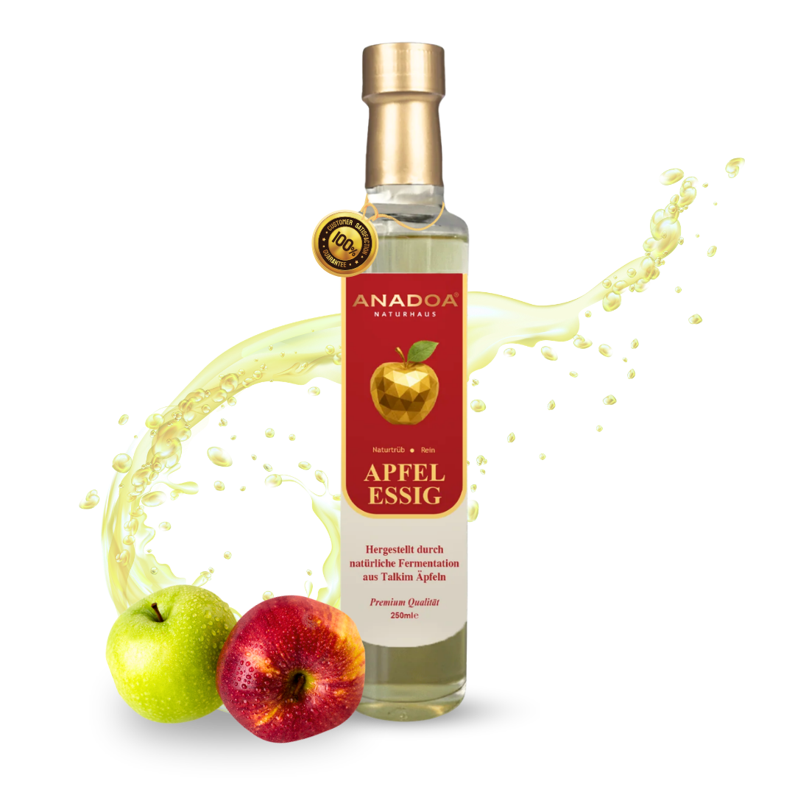

Der naturtrübe Apfelessig gilt seit Jahrtausenden als das universelle Heil- und Lebenselixier. In seiner rohen, unpasteurisierten Form mit der lebendigen Essigmutter entfaltet unser Apfelessig ein unglaubliches Wirkspektrum für Stoffwechsel und Verdauung.
Die Talkim Apfelernte: Der Ursprung unseres Apfelessigs
Die Qualität eines echten Apfelessigs beginnt weit vor der Fermentation – nämlich am Baum. Für unseren Anadoa Apfelessig verwenden wir ausschließlich ungespritzte, sonnengereifte Talkim-Äpfel aus traditionellen Obstgärten Anatoliens. Diese Äpfel zeichnen sich durch einen natürlich hohen Pektin-Gehalt und ein intensives Aroma aus. Geerntet wird schonend von Hand, erst wenn die Früchte die perfekte Balance aus Fruchtsüße und Säure für die Apfelessig-Gärung erreicht haben.
Der Weg der Fermentation: Von der Frucht zum Apfelessig
Die Herstellung unseres naturtrüben Apfelessigs ist ein Prozess der Zeit und Geduld. Wir verzichten bei unserem Apfelessig vollständig auf industrielle Beschleuniger oder künstliche Essigsäurebakterien.
- Schritt 1 (Die Mostgärung): Die frisch gepressten Äpfel werden mit ihrem eigenen Saft belassen. Die natürlich auf der Schale vorkommenden Wildhefen beginnen, den Fruchtzucker in Alkohol umzuwandeln.
- Schritt 2 (Die Essiggärung): In offenen, atmenden Holzfässern wandeln wilde Essigsäurebakterien den Alkohol langsam über viele Monate in unseren milden Apfelessig um.
Die "Essigmutter": Das Geheimnis im trüben Apfelessig
Warum ist unser Apfelessig trüb und warum ist das so wichtig? Die feinen Schlieren, die Sie in der Flasche sehen, bilden die sogenannte Essigmutter im Apfelessig. Sie ist ein lebendiges Geflecht aus nützlichen Mikroorganismen, Enzymen und Proteinen. Industrieller Essig wird erhitzt (pasteurisiert) und gefiltert, um klar zu wirken – dabei sterben alle heilenden Eigenschaften ab. Ein trüber Apfelessig bedeutet Leben, Gesundheit und absolute Reinheit.
Die gesundheitlichen Vorteile von rohem Apfelessig
In der Naturheilkunde ist Apfelessig ein unverzichtbarer Begleiter für ein ganzheitliches Wohlbefinden. Seine regelmäßige Anwendung bringt erstaunliche Vorteile:
- Regulierung des Blutzuckers: Die Essigsäure im Apfelessig verlangsamt die Aufnahme von Kohlenhydraten in den Blutkreislauf und verhindert so Blutzuckerspitzen nach dem Essen.
- Förderung der Verdauung: Die im Apfelessig enthaltenen Enzyme regen die Produktion von Magensäure an und erleichtern die Aufspaltung von Fetten und Proteinen.
- Unterstützung des Mikrobioms: Die lebenden Bakterien der Essigmutter im Apfelessig wirken pre- und probiotisch für eine gesunde Darmflora.
- Basenbildner: Obwohl Apfelessig sauer schmeckt, wird er im Körper basisch verstoffwechselt und hilft, Übersäuerung abzubauen.
Die richtige Anwendung: So integrieren Sie Apfelessig in den Alltag
Die therapeutische Anwendung von Apfelessig unterscheidet sich von der kulinarischen Nutzung. Um von den gesundheitlichen Vorteilen maximal zu profitieren, empfehlen wir das morgendliche Ritual:
- Geben Sie 1 bis 2 Esslöffel unseres naturtrüben Apfelessigs in ein großes Glas lauwarmes Wasser.
- Trinken Sie diese Apfelessig-Mischung morgens auf nüchternen Magen, etwa 15 bis 20 Minuten vor dem Frühstück.
- Bei einem empfindlichen Magen können Sie mit einem Teelöffel beginnen und die Dosis von Apfelessig langsam steigern.
Worauf Sie beim Kauf von Apfelessig unbedingt achten sollten
Nicht jeder Essig ist ein Heilessig. Achten Sie beim Kauf von Apfelessig auf die Aufschrift "naturtrüb" und "unpasteurisiert". Ein hochwertiger Apfelessig darf keine zugesetzten Zucker, keine Aromen und keine Konservierungsstoffe enthalten. Er muss in seiner reinsten Form, direkt aus der Fermentation, abgefüllt werden – genau so, wie Sie unseren Apfelessig bei Anadoa Naturhaus erhalten.
Häufig gestellte Fragen (FAQ)
Warum ist der Apfelessig von Anadoa so trüb?
Unser Apfelessig ist naturtrüb, da wir ihn nach der Fermentation weder erhitzen (pasteurisieren) noch fein filtern. Die Trübung, auch Essigmutter genannt, ist ein Zeichen höchster Qualität und enthält wertvolle probiotische Bakterien und Enzyme.
Wie sollte ich naturtrüben Apfelessig am besten einnehmen?
Wir empfehlen, morgens auf nüchternen Magen 1 bis 2 Esslöffel Apfelessig in ein großes Glas lauwarmes Wasser einzurühren. Alternativ kann er auch hervorragend für Vinaigrettes oder als gesundes Würzmittel in der kalten Küche verwendet werden.
Ist euer Apfelessig aus Konzentrat oder frischen Äpfeln?
Wir verwenden ausschließlich frische, ungespritzte Talkim-Äpfel aus traditionellen anatolischen Obstgärten. Der Saft wird direkt aus der Frucht gewonnen und langsam im Holzfass zu unserem naturtrüben Apfelessig fermentiert.
Kann Apfelessig beim Abnehmen helfen?
Die Essigsäure im Apfelessig kann den Blutzuckerspiegel stabilisieren und Heißhungerattacken reduzieren. Zudem kurbelt er den Stoffwechsel leicht an, was ihn zu einem idealen Begleiter einer ausgewogenen Ernährung macht.
Ist der Apfelessig auch für die Haarpflege geeignet?
Absolut! Eine 'Saure Rinse' (1-2 EL Apfelessig auf 1 Liter kaltes Wasser) nach dem Haarewaschen schließt die Schuppenschicht der Haare, verleiht natürlichen Glanz und lindert Kopfhautjucken.
Wie lagere ich den naturtrüben Apfelessig am besten?
Bewahren Sie unseren Apfelessig an einem kühlen, lichtgeschützten Ort auf. Er muss nach dem Öffnen nicht in den Kühlschrank, da roher Essig durch seinen Säuregrad selbstkonservierend ist.